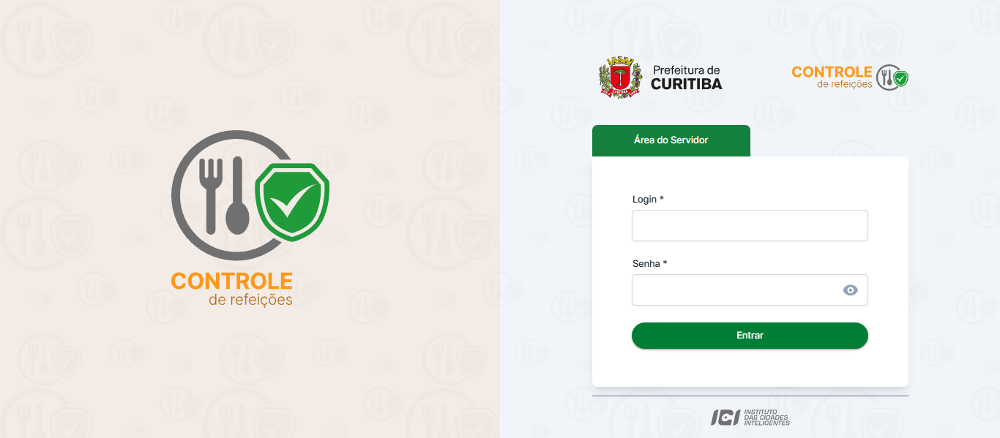
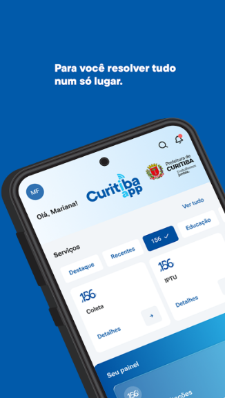
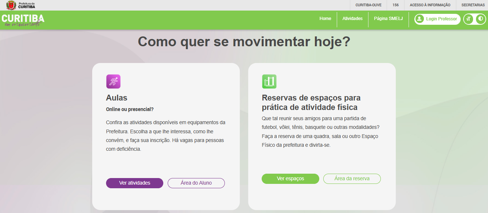

Olá, eu sou Alysson
Atuação:
Transformo projetos em resultados com planejamento, liderança de times e uso inteligente de tecnologia e IA.
Perfil profissional
Coordenação, inovação e execução
Experiência em projetos complexos, times multidisciplinares e soluções que conectam estratégia, operação e tecnologia.
Sobre
Uma trajetória construída entre liderança, tecnologia e entrega
Meu nome é Alysson, tenho 30 anos e sou Cientista da Computação com mais de 12 anos de experiência em tecnologia, liderança de projetos e desenvolvimento de soluções inovadoras.
Atuo como Coordenador de Projetos, liderando equipes multidisciplinares e gerenciando iniciativas complexas com metodologias ágeis, sempre com foco em resultados, qualidade e eficiência.
Possuo experiência prática desde a análise de requisitos até a implantação final, incluindo modelagem de dados, documentação técnica, integrações de sistemas e acompanhamento de entregas ponta a ponta.
Atualmente curso Mestrado em Ciência da Computação e mantenho formação contínua por meio de especializações e certificações em tecnologia, gestão, inovação e transformação digital.
Coordenação de projetos com visão de negócio e tecnologia.
Aplicação prática de IA para produtividade, automação e apoio à decisão.
Habilidades
Competências que sustentam a execução e o crescimento dos projetos
Comunicação e Stakeholders
Alinhamento claro entre times, lideranças e partes interessadas para reduzir ruído e acelerar decisões.
Liderança de Equipes
Condução de equipes multidisciplinares com foco em engajamento, direção clara e alta capacidade de entrega.
Gestão de Projetos
Planejamento, escopo, cronograma, riscos e acompanhamento de entregas com visão de ponta a ponta.
Metodologias Ágeis
Aplicação prática de Scrum, Kanban e ciclos de melhoria contínua para manter cadência e previsibilidade.
Tomada de Decisão
Leitura estratégica de cenário, priorização e resolução de problemas com equilíbrio entre agilidade e governança.
IA Aplicada
Uso de inteligência artificial para automação, produtividade, análise e suporte a decisões operacionais.
Projetos
Entregas que conectam produto, operação e impacto real
Projeto em destaque
Sistema de Gestão de Refeições
Coordenação completa do projeto com metodologia ágil, incluindo planejamento, gestão de escopo, riscos, stakeholders e acompanhamento de entregas.

Integração mobile
Cardápio Aluno (Curitiba App)
Integração com sistema educacional para disponibilização de cardápio escolar em aplicativo mobile, com foco em acesso simples e comunicação com o usuário.

Serviço digital
Curitiba em Movimento
Sistema para reserva de espaços públicos, promovendo acesso da população a atividades esportivas e sociais com organização digital e experiência simplificada.

Formação
Base acadêmica forte e desenvolvimento contínuo
Formação e especializações
Formação em Ciência da Computação, complementada por MBAs e pós-graduações nas áreas de tecnologia, gestão, inovação e transformação digital.
Mestrado em andamento
Atualmente cursando Mestrado em Ciência da Computação, ampliando repertório técnico e capacidade analítica.
Certificações
Mais de 120 certificações nas áreas de tecnologia, gestão de projetos, inovação e melhoria contínua.
Contato
Vamos construir algo relevante juntos
Se você busca alguém para liderar projetos, estruturar entregas ou acelerar resultados com tecnologia e IA, estou à disposição para conversar.